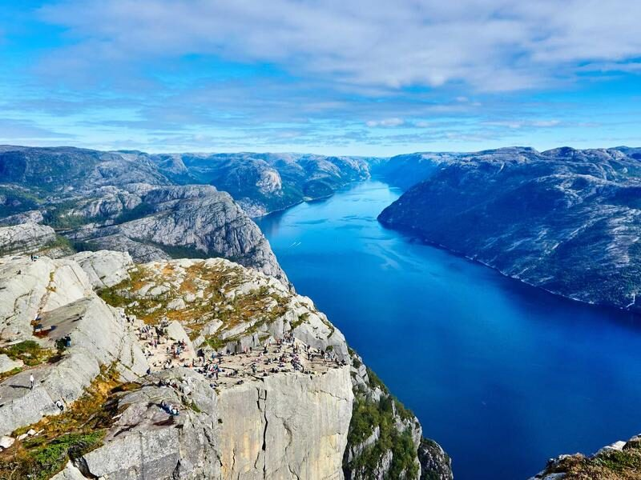
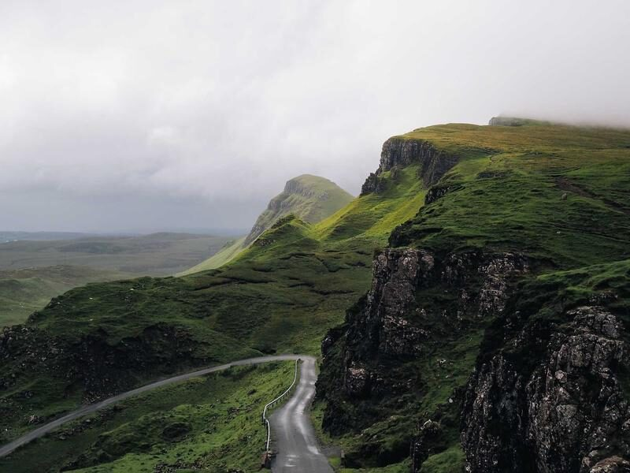
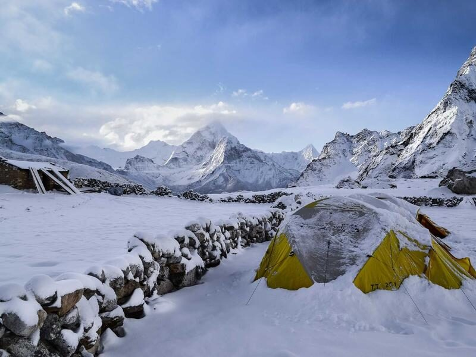
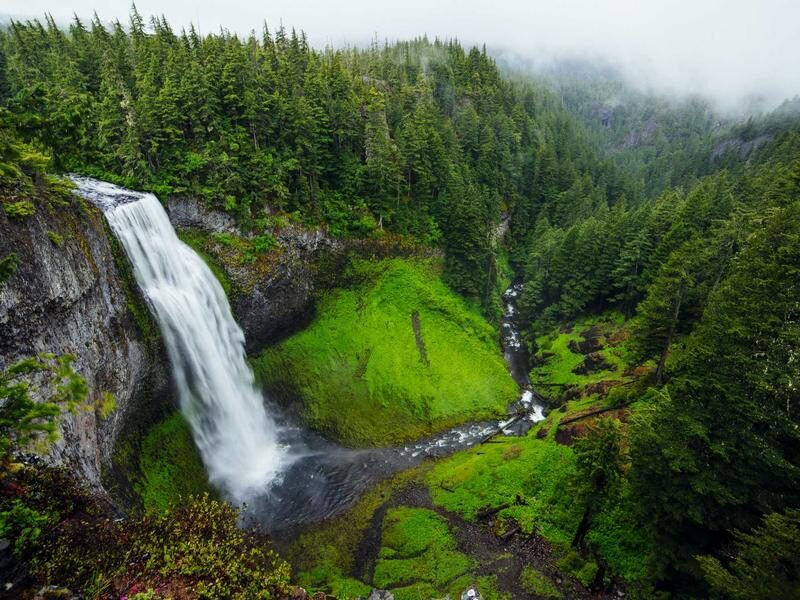
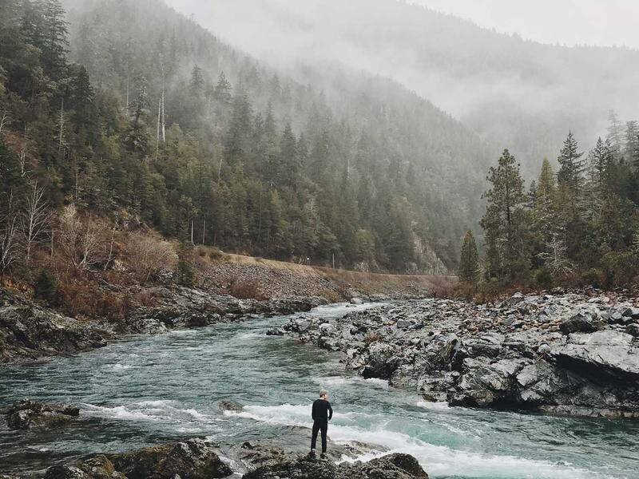
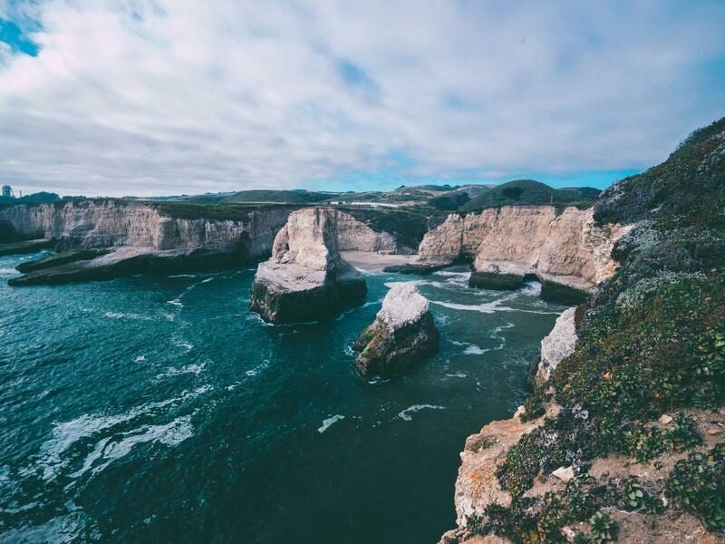

Цастай уул
Цастай уул
Цастай уулсын бэлд байгаа майхнууд. Ар талд нь цастай оргилууд харагдана.
Зураг: Wolfgang Lutz, Unsplash
Байгалийн гэрэл зургууд. Зураг дээр хулгана аваачих эсвэл Tab товчоор очиход зураг томорно.






«Эргүүлэх» товч дарахад карт эргэж, ар тал нь харагдана.
Цастай уулсын бэлд байгаа майхнууд. Ар талд нь цастай оргилууд харагдана.
Зураг: Wolfgang Lutz, Unsplash
Ой дундах өндөр хүрхрээ. Ус нь ногоон хавцал руу урсаж унана.
Зураг: Andrew Coelho, Unsplash
Далайн эргийн хадан хясаа. Долгион хадыг угаана.
Зураг: Joseph Barrientos, Unsplash